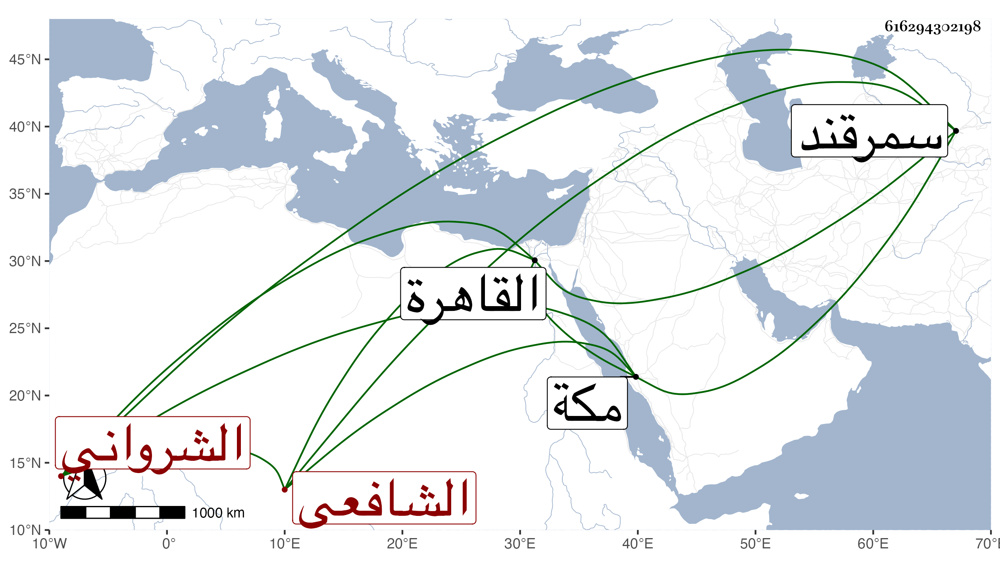

0902Sakhawi.DawLamic.ITO20230111-ara1.EIS1600.616294302198
Biography ID: 616294302198
557
فتح الله بن أبي يزيد بن عبد العزيز بن إبراهيم الشرواني الشافعي ، حج بعد السبعين وثمانمائة وقدم القاهرة في رجوعه وذكره النجم بن قاضي عجلون بتمام الفضيلة ولما كان بمكة عرض عليه أبو السعود ابن قاضيها وكتب له إجازة حسنة وبلغني أن له تصانيف منها تفسير آية الكرسي وشرح المراح والإرشاد في النحو للتفتازاني وكذا شرح الأنوار للأردبيلي بالفارسية لأجل ابن شاه رخ سلطان سمرقند في مجلدين فأفسده وهو إلى بعد الثمانين في قيد الحياة .
